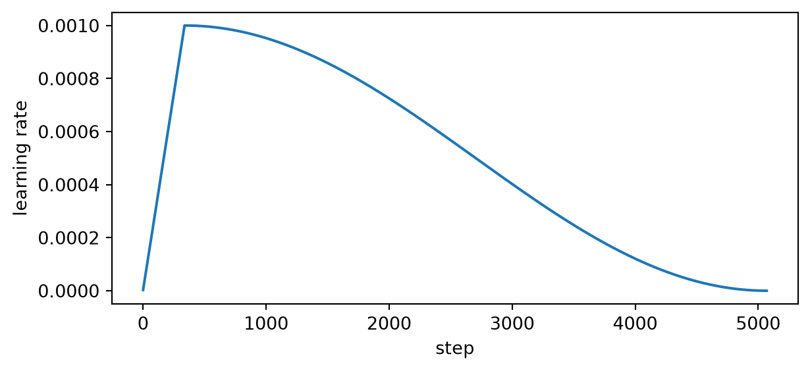
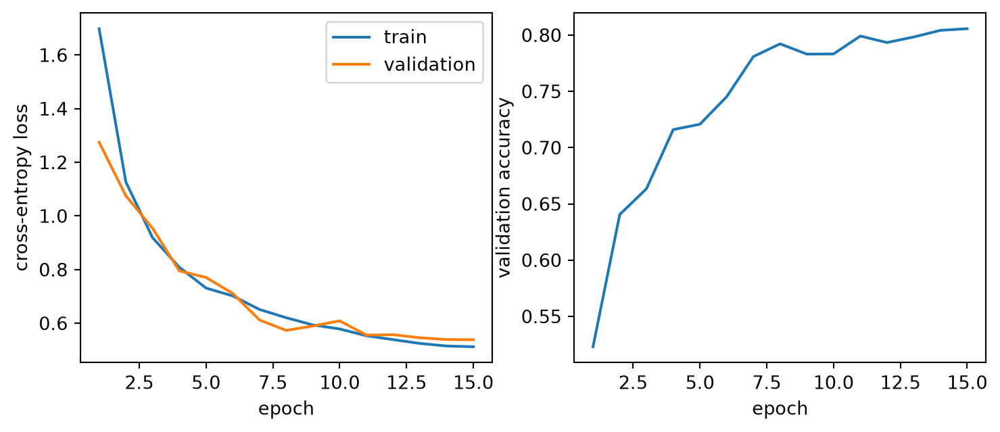

import math # for the cosine schedule
import time # to time epochs
from pathlib import Path
import torch
from matplotlib import pyplot as plt
from torch import nn
from torch.utils.data import DataLoader, Subset
from torchmetrics import MeanMetric
from torchmetrics.classification import MulticlassAccuracy
from torchvision.datasets import EuroSAT
from torchvision.transforms import v2 as TA realistic training loop
The toy example early in this course trained a model with a bare five-line loop. Real training needs more: mixed precision, a learning-rate schedule, gradient clipping, proper metrics, early stopping, and checkpointing of the best model.
In this section, we assemble all of it into a loop and run it on EuroSAT to train a small convolutional neural network (CNN) from scratch.
Setup
torchmetrics provides composable, device-aware metrics (MeanMetric for weighted averages, MulticlassAccuracy for the classification score).
As we saw in the first section, we pick the accelerator if there is one, fall back to the CPU otherwise, and seed for reproducibility:
device = (
torch.accelerator.current_accelerator()
if torch.accelerator.is_available()
else torch.device("cpu")
)
torch.manual_seed(42)
print(f"Torch version: {torch.__version__}\nDevice: {device}")Torch version: 2.13.0+cu130
Device: cudaThe data pipeline is the one built in the previous sections: transforms with augmentation for training and deterministic transforms for validation, loaders with 8 workers. The training shuffle gets a seeded generator, so that runs are reproducible:
root = Path("/project/def-sponsor00/data")IMAGENET_MEAN, IMAGENET_STD = [0.485, 0.456, 0.406], [0.229, 0.224, 0.225]
train_tf = T.Compose(
[
T.ToImage(),
T.RandomHorizontalFlip(),
T.RandomVerticalFlip(),
T.RandomRotation(90),
T.ToDtype(torch.float32, scale=True),
T.Normalize(IMAGENET_MEAN, IMAGENET_STD),
]
)
val_tf = T.Compose(
[
T.ToImage(),
T.ToDtype(torch.float32, scale=True),
T.Normalize(IMAGENET_MEAN, IMAGENET_STD),
]
)
idx = torch.load(root / "split.pt", weights_only=True)
train = Subset(EuroSAT(root=root, transform=train_tf), idx["train"])
val = Subset(EuroSAT(root=root, transform=val_tf), idx["val"])
loader_kwargs = {
"batch_size": 64,
"num_workers": 8,
"pin_memory": torch.accelerator.is_available(),
}
train_loader = DataLoader(
train, shuffle=True, generator=torch.Generator().manual_seed(42), **loader_kwargs
)
val_loader = DataLoader(val, **loader_kwargs)
print(f"Train batches: {len(train_loader)}\nVal batches: {len(val_loader)}")Train batches: 338
Val batches: 85A deliberately small model
The model is a small convolutional network: three conv blocks that double the channels (the first two also halve the image), then a global average pool and a linear layer producing one score per class.
class Net(nn.Module):
"""A small CNN for 64x64 images and 10 classes."""
def __init__(self):
super().__init__()
self.layers = nn.Sequential(
# 3 conv blocks: each doubles the channels; the first two halve the image
nn.Conv2d(3, 32, 3, padding=1),
nn.ReLU(),
nn.MaxPool2d(2), # 64 -> 32
nn.Conv2d(32, 64, 3, padding=1),
nn.ReLU(),
nn.MaxPool2d(2), # 32 -> 16
nn.Conv2d(64, 128, 3, padding=1),
nn.ReLU(), # 16 -> 16
nn.AdaptiveAvgPool2d(1), # one value per channel: 128 features
nn.Flatten(),
nn.Linear(128, 10), # one score per class
)
def forward(self, x):
return self.layers(x)- Each
nn.Conv2dslides 3 × 3 filters over the image (padding=1keeps the size). nn.AdaptiveAvgPool2d(1)averages each channel over the whole image: whatever the input size, the output is 128 numbers. This makes the architecture tolerant to other image sizes.
model = Net().to(device)
print("Parameters:", sum(p.numel() for p in model.parameters()))Parameters: 94538Roughly 95,000 parameters: the same small CNN that we used to measure GPU starvation in the parallel loading section. It is deliberately modest. Trained from scratch, it will land on a mediocre baseline, and that is the point: it gives every later technique something to improve upon, and its epochs run in seconds even on small GPUs.
Hyperparameters
The training hyperparameters include the loss function, the optimizer, and the learning-rate schedule.
The loss function and optimizer are the ones used in our toy example: cross-entropy for classification, AdamW with decoupled weight decay:
loss_fn = nn.CrossEntropyLoss()
optimizer = torch.optim.AdamW(model.parameters(), lr=1e-3, weight_decay=0.01)The new ingredient is the schedule. A constant learning rate is a poor default: too high and early updates destabilize the run, too low and training crawls. We combine two standard ideas:
- Warmup: the learning rate ramps up from almost zero over the first epoch. The first steps happen on random weights, where gradients are large and noisy.
- Cosine decay: afterwards, it anneals smoothly down to zero: large steps while the model is coarse, small steps while it refines.
max_epochs, patience, warmup = 15, 4, len(train_loader) # warmup: 1 epoch
total_steps = max_epochs * len(train_loader)
def lr_lambda(step):
if step < warmup:
return (step + 1) / warmup # linear ramp from ~0 to 1
progress = (step - warmup) / (total_steps - warmup)
return 0.5 * (1.0 + math.cos(math.pi * progress)) # cosine down to ~0
scheduler = torch.optim.lr_scheduler.LambdaLR(optimizer, lr_lambda)
print(f"Warmup: {warmup} steps\nTotal: {total_steps} steps")Warmup: 338 steps
Total: 5070 stepsLambdaLR multiplies the base learning rate (1e-3) by our function at every step. Here is its shape over the planned run:
base_lr = optimizer.param_groups[0]["initial_lr"]
lrs = [base_lr * lr_lambda(s) for s in range(total_steps)]
fig, ax = plt.subplots(figsize=(7, 3))
ax.plot(lrs)
ax.set_xlabel("step")
ax.set_ylabel("learning rate")
Metrics
Hand-rolled accuracy is easy to get subtly wrong (averaging over batches instead of samples is a classic mistake). We use the torchmetrics package: metrics are objects with an update() method called once per batch and a compute() method called at the end.
We need two metrics: MeanMetric for a weighted average (per-batch losses weighted by batch size, since the last batch is smaller), and MulticlassAccuracy:
metric = MulticlassAccuracy(num_classes=10).to(device)
with torch.inference_mode():
logits = torch.eye(10).repeat(3, 1).to(device) # 30 rows of perfect logits
preds = logits.argmax(dim=1)
metric.update(preds, torch.arange(10).repeat(3).to(device))
print(f"Accuracy: {metric.compute().item()}")Accuracy: 1.0We get perfect predictions on three passes over the 10 classes: the accuracy is 1.0.
One epoch of training
One more modern ingredient: mixed precision. The compute happens in bfloat16, which halves memory traffic and, on recent GPUs, uses dedicated fast paths, while sensitive operations stay in float32. torch.autocast handles the casting per operation:
# bf16 only accelerates on Ampere (2020) and newer GPUs; on older ones it
# runs in emulation and can be slower than plain fp32, hence the gate
use_bf16 = device.type == "cuda" and torch.cuda.get_device_capability()[0] >= 8
print(f"Use of mixed precision: {use_bf16}")Use of mixed precision: FalseWhy bf16 rather than the classic fp16? bf16 keeps the exponent range of float32, so it does not need the gradient scaling that fp16 training requires (the GradScaler you will meet in older tutorials). On GPUs too old to accelerate bf16, like the RTX 2060 this page renders on, fp32 remains the honest choice: we measured bf16 emulation there at twice the epoch time of fp32. On the GPUs of the later cluster section, the gate opens and the same code runs in bf16.
Here is one epoch, the production version of the toy loop:
def train_epoch():
model.train()
loss_metric = MeanMetric().to(device)
for x, y in train_loader:
x = x.to(device, non_blocking=True)
y = y.to(device, non_blocking=True)
optimizer.zero_grad()
with torch.autocast(
device_type=device.type, dtype=torch.bfloat16, enabled=use_bf16
):
loss = loss_fn(model(x), y)
loss.backward()
nn.utils.clip_grad_norm_(model.parameters(), 1.0)
optimizer.step()
scheduler.step() # the schedule advances every batch
loss_metric.update(loss.detach(), weight=x.size(0))
return loss_metric.compute().item()model.train()switches to training behaviour (our CNN has no mode-dependent layers, but the habit prevents silent bugs the day the model changes).- Batches move to the accelerator with
non_blocking=True: with pinned memory, the copies overlap with compute. - The forward pass and the loss sit inside the autocast context; the backward pass and the optimizer work outside it: autocast casts the inputs of selected operations, the weights stay in float32, and no gradient scaling is needed.
clip_grad_norm_rescales the gradients if their global norm exceeds 1.0: one pathological batch cannot produce a huge parameter jump. This protects the run at a negligible cost.- The scheduler advances at every batch, matching the per-step warmup and cosine.
loss_metric.updatereceives the detached loss weighted by the batch size, so the epoch loss is the mean over images, not over batches.
Evaluation
Evaluation runs the validation batches through the model without the training machinery:
def evaluate():
model.eval()
loss_metric = MeanMetric().to(device)
acc_metric = MulticlassAccuracy(num_classes=10).to(device)
for x, y in val_loader:
x = x.to(device, non_blocking=True)
y = y.to(device, non_blocking=True)
with torch.inference_mode():
logits = model(x)
preds = logits.argmax(dim=1)
loss_metric.update(loss_fn(logits, y), weight=x.size(0))
acc_metric.update(preds, y)
return loss_metric.compute().item(), acc_metric.compute().item()model.eval()is the counterpart ofmodel.train().torch.inference_mode()disables the autograd engine: no graph is recorded, so evaluation is faster and leaner.- Predictions are the class with the highest logit, computed inside the context. The loss and the metric updates come after it, on tensors created inside. That works because such tensors can be read anywhere: outside
inference_mode(), their only limits are in-place modification and autograd. The loss and the updates would work inside the context as well.
Early stopping
The last piece is the loop around the epochs. It keeps a history for plotting, saves a checkpoint whenever validation improves, and stops when it has not improved for patience epochs:
def fit():
history = {"train_loss": [], "val_loss": [], "val_acc": [], "lr": []}
best_acc, best_epoch, wait = 0.0, 0, 0
for epoch in range(1, max_epochs + 1):
t0 = time.perf_counter()
train_loss = train_epoch()
val_loss, val_acc = evaluate()
history["train_loss"].append(train_loss)
history["val_loss"].append(val_loss)
history["val_acc"].append(val_acc)
history["lr"].append(scheduler.get_last_lr()[0])
marker = ""
if val_acc > best_acc:
best_acc, best_epoch, wait = val_acc, epoch, 0
torch.save(
{"model": model.state_dict(), "epoch": epoch, "val_acc": val_acc},
root / "best.pt",
)
marker = " *"
else:
wait += 1
print(
f"epoch {epoch:2d} train {train_loss:.3f} val {val_loss:.3f} "
f"acc {val_acc:5.1%} lr {scheduler.get_last_lr()[0]:.2e} "
f"{time.perf_counter() - t0:4.1f} s{marker}"
)
if wait >= patience:
print(f"early stop: no improvement for {patience} epochs")
break
return history, best_epoch, best_acc- The
*marks epochs that improved on the best validation accuracy so far, each of which overwrites the checkpoint. - Why checkpoint at all? Validation metrics wobble from epoch to epoch, so the model at the last epoch is not necessarily the best one. The saved checkpoint is the one to keep and evaluate.
- Early stopping ends the run when
waitreachespatience: the model has stopped improving and further epochs are wasted compute (and, given enough of them, would slowly overfit).
The run
history, best_epoch, best_acc = fit()epoch 1 train 1.698 val 1.275 acc 52.3% lr 1.00e-03 35.8 s *
epoch 2 train 1.127 val 1.075 acc 64.1% lr 9.87e-04 36.0 s *
epoch 3 train 0.919 val 0.954 acc 66.3% lr 9.50e-04 35.9 s *
epoch 4 train 0.809 val 0.795 acc 71.6% lr 8.91e-04 35.9 s *
epoch 5 train 0.731 val 0.771 acc 72.1% lr 8.12e-04 35.8 s *
epoch 6 train 0.702 val 0.711 acc 74.5% lr 7.17e-04 36.2 s *
epoch 7 train 0.651 val 0.612 acc 78.1% lr 6.11e-04 36.0 s *
epoch 8 train 0.620 val 0.573 acc 79.2% lr 5.00e-04 35.6 s *
epoch 9 train 0.593 val 0.590 acc 78.3% lr 3.89e-04 36.2 s
epoch 10 train 0.579 val 0.609 acc 78.3% lr 2.83e-04 35.6 s
epoch 11 train 0.553 val 0.556 acc 79.9% lr 1.88e-04 35.8 s *
epoch 12 train 0.539 val 0.557 acc 79.3% lr 1.09e-04 36.0 s
epoch 13 train 0.525 val 0.546 acc 79.8% lr 4.95e-05 39.0 s
epoch 14 train 0.515 val 0.539 acc 80.4% lr 1.25e-05 38.9 s *
epoch 15 train 0.512 val 0.539 acc 80.6% lr 0.00e+00 38.1 s *A few things to read in this output:
- Each epoch takes a handful of seconds on this laptop GPU: the loop is cheap enough to experiment with.
- The accuracy does not climb smoothly: it wobbles, and in our run it hovered in the mid-70s for a few epochs before jumping to about 79%. The patience of 4 gave the run room to wait out that plateau instead of stopping at the first non-improving epoch.
- Improvements kept arriving late in the schedule. On longer schedules or bigger models, that is rarely the case, and early stopping is what saves you from babysitting a run that has plateaued.
Learning curves
fig, (ax1, ax2) = plt.subplots(1, 2, figsize=(9, 3.5))
epochs = range(1, len(history["train_loss"]) + 1)
ax1.plot(epochs, history["train_loss"], label="train")
ax1.plot(epochs, history["val_loss"], label="validation")
ax1.set_xlabel("epoch")
ax1.set_ylabel("cross-entropy loss")
ax1.legend()
ax2.plot(epochs, history["val_acc"])
ax2.set_xlabel("epoch")
ax2.set_ylabel("validation accuracy")
The validation loss tracks the training loss closely: augmentation is doing its job, and the model is not badly overfitting. It is simply running out of capacity: about one image in five is still misclassified. This is our mediocre baseline.
The best checkpoint
The file saved along the way holds the best model seen:
ckpt = torch.load(root / "best.pt", weights_only=True)
print(f"Best epoch: {ckpt['epoch']} (val acc: {ckpt['val_acc']:.1%})")
model.load_state_dict(ckpt["model"])
val_loss, val_acc = evaluate()
print(f"Restored model: val loss {val_loss:.3f}, acc {val_acc:.1%}")Best epoch: 15 (val acc: 80.6%)
Restored model: val loss 0.539, acc 80.6%weights_only=Truekeepstorch.loadrestricted to plain data: loading a checkpoint should never execute code.- Restoring the weights and re-evaluating confirms the numbers: this is the baseline model of the course, a small CNN at about 81% validation accuracy.
Script
Let’s wrap all this code in a Python script so that we can test it on the cluster.
There are a couple of changes we need to make to the code:
Earlier, we used the
if __name__ == "__main__":guard directly above the for loop in which the loaders were launching multiple workers. This would not work here because the loops are now inside functions (train_epoch()andevaluate()) whilefit()is called at the module level. The proper way to handle this is to bring the setup and the three functions inside amain()function and run it under the guard.The current training cluster has CPU nodes with 8 CPUs, so previously we could request 8 worker processes to load the data in parallel. For the first time, we will use a GPU node (we need that GPU for training). Unfortunately, the GPU nodes only have 3 CPUs. We should thus limit our
num_workersto 3.
To launch this script, we can use:
srun --mem=10000 --gpus-per-node=1 --cpus-per-task=3 python loop.py--mem is the memory requested for all the CPUs of the job (3 here), not per CPU. Let’s thus roughly triple the memory we were asking for per CPU on the CPU nodes.
When I ran it on the training cluster earlier, I got the following:
Torch version: 2.14.1
Device: cuda
Train batches: 338
Val batches: 85
Parameters: 94538
Warmup: 338 steps
Total: 5070 steps
Accuracy: 1.0
Use of mixed precision: True
epoch 1 train 1.696 val 1.273 acc 52.5% lr 1.00e-03 152.8 s *
epoch 2 train 1.122 val 1.067 acc 64.1% lr 9.87e-04 12.2 s *
epoch 3 train 0.914 val 0.964 acc 64.8% lr 9.50e-04 10.3 s *
epoch 4 train 0.807 val 0.808 acc 71.6% lr 8.91e-04 10.5 s *
epoch 5 train 0.733 val 0.794 acc 71.7% lr 8.12e-04 10.5 s *
epoch 6 train 0.699 val 0.732 acc 73.6% lr 7.17e-04 10.4 s *
epoch 7 train 0.657 val 0.641 acc 76.8% lr 6.11e-04 10.4 s *
epoch 8 train 0.623 val 0.581 acc 78.5% lr 5.00e-04 10.5 s *
epoch 9 train 0.594 val 0.623 acc 76.7% lr 3.89e-04 10.0 s
epoch 10 train 0.581 val 0.598 acc 79.0% lr 2.83e-04 10.2 s *
epoch 11 train 0.554 val 0.551 acc 79.8% lr 1.88e-04 10.4 s *
epoch 12 train 0.538 val 0.557 acc 79.4% lr 1.09e-04 10.3 s
epoch 13 train 0.525 val 0.552 acc 79.9% lr 4.95e-05 10.3 s *
epoch 14 train 0.515 val 0.543 acc 80.6% lr 1.25e-05 10.3 s *
epoch 15 train 0.512 val 0.543 acc 80.7% lr 0.00e+00 10.1 s *
Best epoch: 15 (val acc: 80.7%)
Restored model: val loss 0.543, acc 80.7%The first epoch took far longer than the others: it pays one-time start-up costs (loading the CUDA and cuDNN libraries, starting the worker processes, and filling the filesystem cache). Expect this on a first run; the following epochs took about 10 s each.
Running the full script on my laptop gives:
Torch version: 2.13.0+cu130
Device: cuda
Train batches: 338
Val batches: 85
Parameters: 94538
Warmup: 338 steps
Total: 5070 steps
Accuracy: 1.0
Use of mixed precision: False
epoch 1 train 1.695 val 1.268 acc 53.0% lr 1.00e-03 7.9 s *
epoch 2 train 1.119 val 1.063 acc 63.8% lr 9.87e-04 4.8 s *
epoch 3 train 0.912 val 0.887 acc 68.1% lr 9.50e-04 5.1 s *
epoch 4 train 0.803 val 0.766 acc 73.0% lr 8.91e-04 5.1 s *
epoch 5 train 0.732 val 0.776 acc 71.7% lr 8.12e-04 5.1 s
epoch 6 train 0.699 val 0.714 acc 74.2% lr 7.17e-04 5.1 s *
epoch 7 train 0.654 val 0.637 acc 76.9% lr 6.11e-04 5.1 s *
epoch 8 train 0.619 val 0.571 acc 78.9% lr 5.00e-04 5.1 s *
epoch 9 train 0.592 val 0.584 acc 78.3% lr 3.89e-04 5.1 s
epoch 10 train 0.580 val 0.630 acc 77.5% lr 2.83e-04 5.2 s
epoch 11 train 0.553 val 0.556 acc 79.8% lr 1.88e-04 5.2 s *
epoch 12 train 0.536 val 0.556 acc 79.8% lr 1.09e-04 5.0 s
epoch 13 train 0.523 val 0.548 acc 79.8% lr 4.95e-05 5.0 s *
epoch 14 train 0.513 val 0.538 acc 80.8% lr 1.25e-05 5.2 s *
epoch 15 train 0.510 val 0.539 acc 80.7% lr 0.00e+00 5.1 s
Best epoch: 14 (val acc: 80.8%)
Restored model: val loss 0.538, acc 80.8%Remember that we are using srun here because the jobs are very short and we want to be notified and get the results as soon as they become available. On a production cluster, for a normal job, you would create a batch script:
loop.sh
#!/bin/bash
#SBATCH --account=def-<user>
#SBATCH --gpus-per-node=h100:1 # or whatever GPU type you want
#SBATCH --cpus-per-task=3 # CPU cores
#SBATCH --mem=10000 # memory per node
#SBATCH --time=0-03:00
python loop.pyThen you would launch the job with:
sbatch loop.shYou would then monitor it with sq, seff, etc.
Your turn:
The learning rate is the hyperparameter that most affects this run. Train for 3 epochs with lr=1e-1, then 3 epochs with lr=1e-4, and compare the epoch losses with our run at lr=1e-3.
First hint: each trial needs a fresh
model,optimizer, andscheduler(the scheduler holds a reference to the optimizer).Second hint:
lr_lambdareadswarmupandtotal_stepsfrom the global scope: lowermax_epochsand recomputetotal_stepsrather than editing the function.